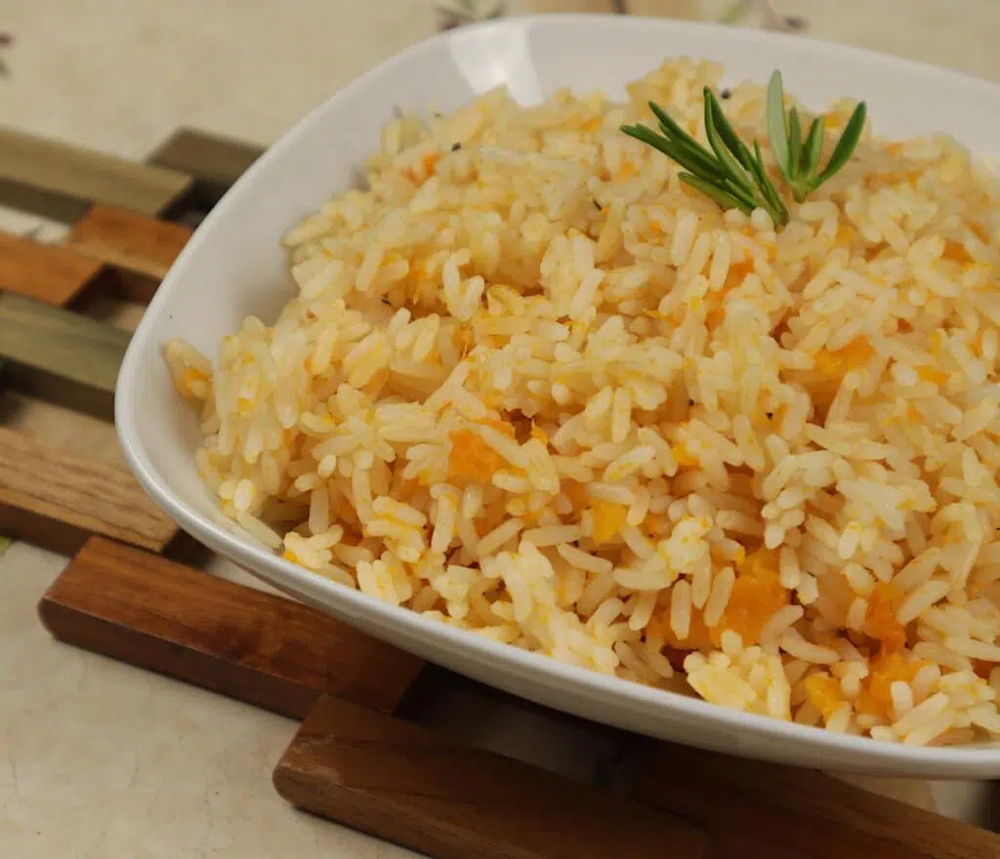

Pumpkin Rice
This pumpkin rice recipe is a simple and flavorful side dish that is perfect for fall. The sweetness of the pumpkin complements the savory flavors of the rice and spices.
Ingredients
- 1 cup long-grain rice
- 2 cups water
- 1 cup pumpkin, peeled and chopped
- 1/2 onion, chopped
- 2 cloves garlic, minced
- 1 tsp dried thyme
- 1 tsp ground cumin
- 1/2 tsp ground allspice
- 1/4 tsp cayenne pepper
- 1 tsp salt
- 1/4 cup chopped fresh cilantro
Instructions
- In a medium saucepan, combine the rice and water and bring to a boil over high heat.
- Reduce the heat to low, cover the pan with a tight-fitting lid, and simmer for 18-20 minutes, or until the rice is tender and the water has been absorbed.
- Meanwhile, in a large skillet, sauté the pumpkin, onion, and garlic over medium heat until the vegetables are tender, about 10 minutes.
- Add the thyme, cumin, allspice, cayenne pepper, and salt to the skillet and stir to combine.
- Add the cooked rice to the skillet and stir to combine.
- Stir in the chopped cilantro and serve.